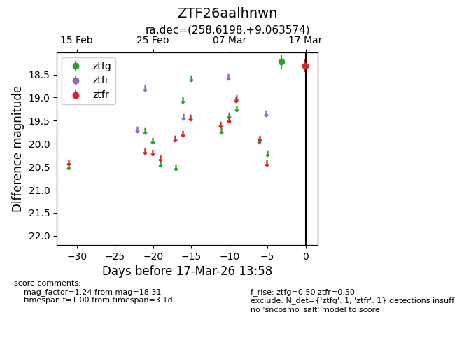
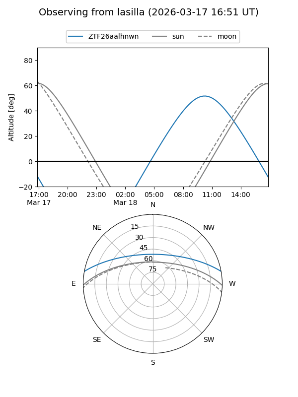
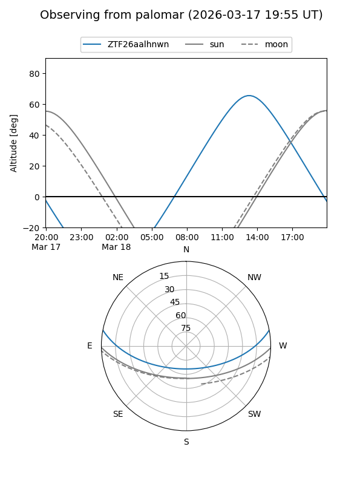

ZTF26aalhnwn
Target ZTF26aalhnwn at 2026-03-17 14:00
Aliases and brokers:
FINK: link
Lasair: link
ALeRCE: link
alt names
ZTF26aalhnwn (ztf,fink_ztf)
Coordinates:
equatorial (ra, dec) = 258.6198,+9.06357
equatorial (HMS+DMS) = 17:14:28.74,+09:03:48.87
galactic (l, b) = (30.0920,+25.63638)
Flags:
Photometry:
last ztfg=18.22, ztfr=18.31
1 ztfg, 1 ztfr detections
Lightcurve

Visibility


Additional plots